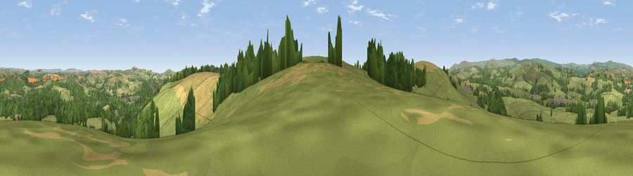

Viewpoint near Harberton
#9391 in England · top 22% of its area beats it · near HarbertonWhere it is
The exact computed spot (SX 78262 60262). Click the marker for map links.
The view, rendered

A 360° render of this exact spot computed from the terrain model, tree cover and land cover — summer colours, afternoon light, calibrated against photographs of famous viewpoints. Real trees, hedges and buildings will differ in detail.
The panorama
Grey silhouette: terrain skyline in each direction (720 bearings, Earth curvature and refraction included). Dashed green: skyline with trees (+15 m) and buildings (+8 m) as obstacles. Blue strip: how far the ground is visible on each bearing.
Where the view opens
Wedge length = distance to the farthest visible ground on that bearing (vegetation-aware). Rings at 10, 25 and 50 km.
What fills the view
54% grassland · 27% woodland · 14% cropland · 4% built-up
Angular shares of the visible panorama (visual magnitude), not map area. Landscape diversity 0.48 (0–1 Shannon).
Key numbers
More beautiful places nearby
The staircase of upgrades: each row has a higher view potential than everything closer. Driving times are estimates from straight-line distance, calibrated against real road routing — check an actual route before setting out.
| Place | Direction | Drive | Score |
|---|---|---|---|
| Viewpoint near Totnes | ESE · 1 km | ~4 min | 68.2 |
| Viewpoint near Totnes | ESE · 2 km | ~6 min | 68.9 |
| Viewpoint near Rattery | NW · 4 km | ~10 min | 69.1 |
| Viewpoint near Moreleigh | SSW · 7 km | ~14 min | 74.0 |
| Viewpoint near Berry Pomeroy | ENE · 7 km | ~14 min | 76.6 |
| Viewpoint near Stoke Gabriel | E · 7 km | ~15 min | 79.1 |
| Beacon Hill | ENE · 8 km | ~16 min | 82.3 |
| Viewpoint near Kingswear | SE · 16 km | ~28 min | 83.8 |
50.42956, -3.71533 · source: screening · position refined by local search. Computed location — check access rights before visiting.